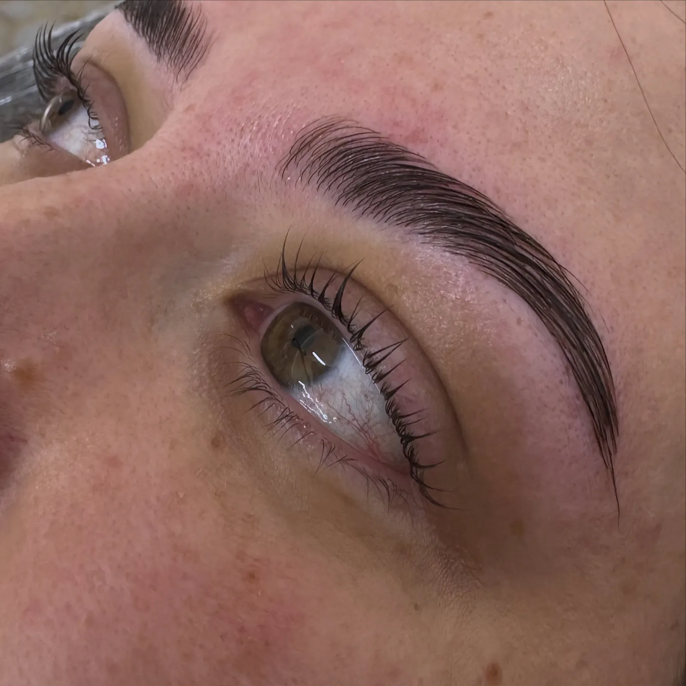
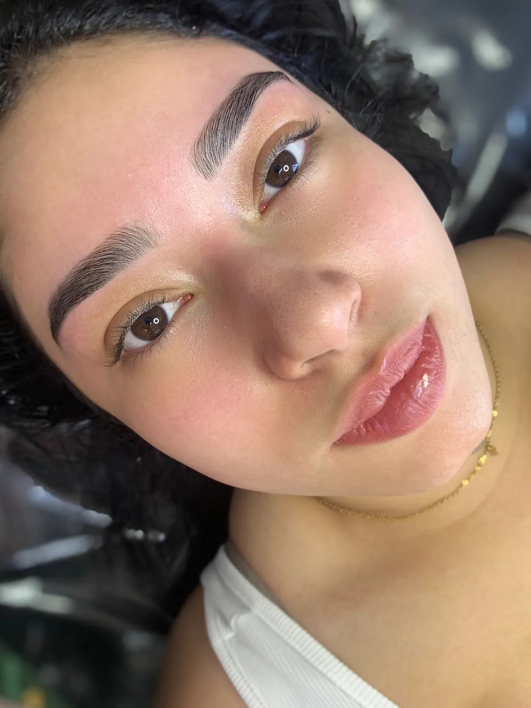
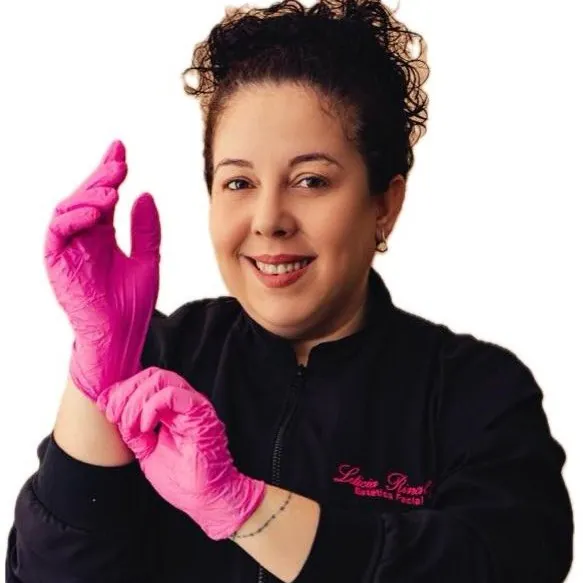
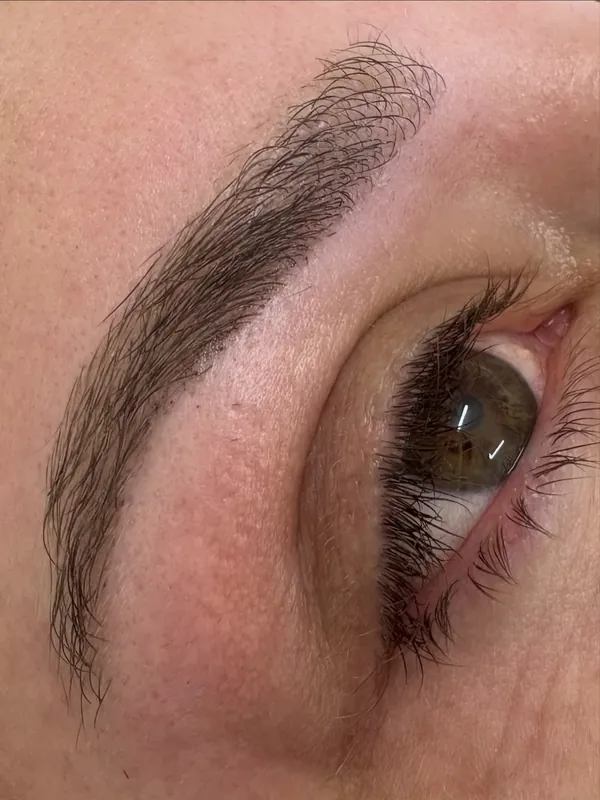
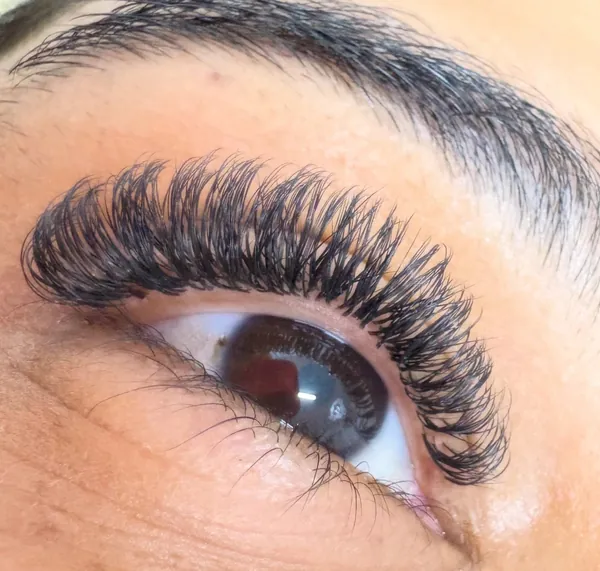
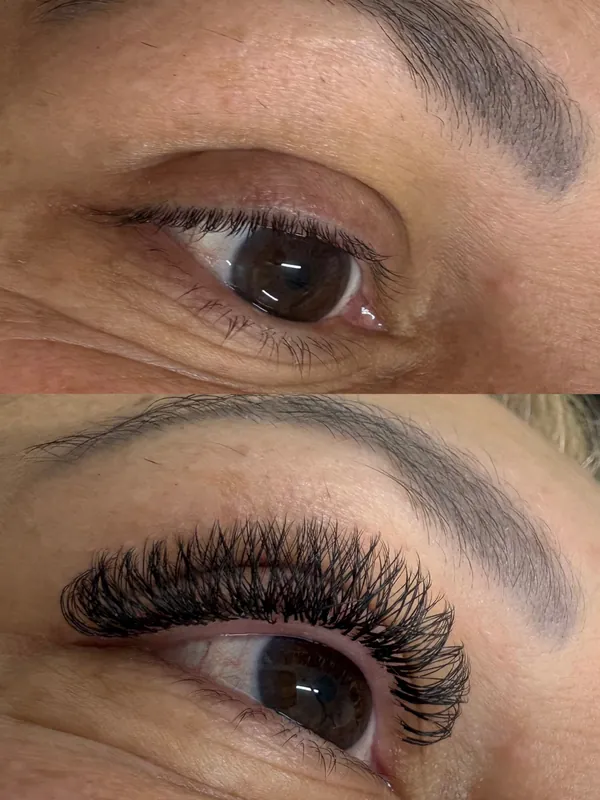
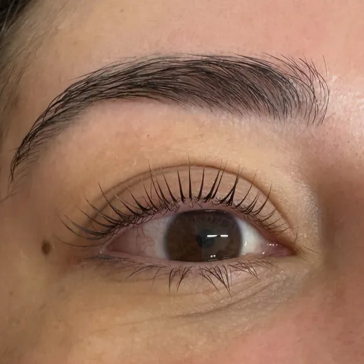
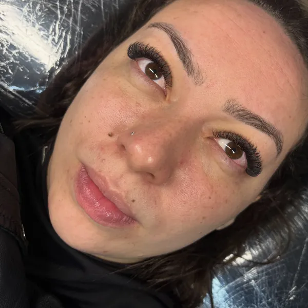
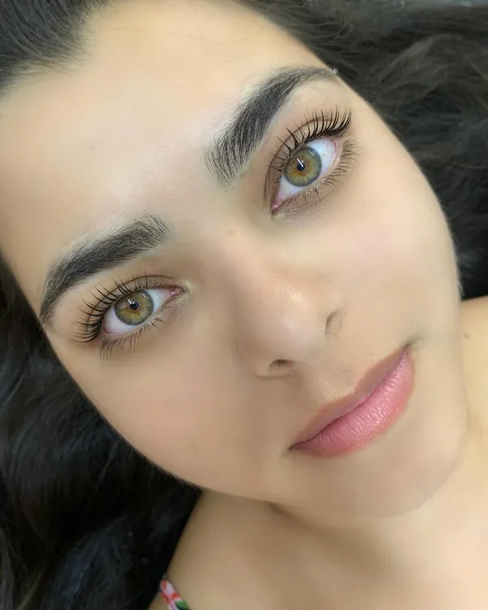

Sobrancelhas desenhadas para o seu rosto
Design de sobrancelhas, brow lamination e extensão de cílios fio a fio no Jardim D'abril, em Osasco. A Letícia explica cada etapa antes de começar.
5,0 no Google, com 78 avaliações

Serviços

Design de sobrancelhas
Formato pensado para as proporções do seu rosto, com acabamento natural e mão leve.
Agendar design de sobrancelhas-
Brow lamination
Alinha e fixa os fios da sobrancelha para um efeito mais cheio e penteado.
Perguntar sobre brow lamination -
Extensão de cílios
Fio a fio ou volume brasileiro, com o mapping escolhido para o seu olhar, como o efeito boneca.
Perguntar sobre extensão de cílios -
Lash lifting
Curva e alonga os seus próprios cílios, sem extensão.
Perguntar sobre lash lifting -
Dermaplanagem
Esfoliação do rosto que remove células mortas e a penugem fina.
Perguntar sobre dermaplanagem

Letícia Rinaldi
Designer de sobrancelhas e extensionista de cílios
Nas avaliações, as clientes repetem a mesma coisa: a Letícia explica o procedimento antes de começar, ensina os cuidados em casa e tem paciência do início ao fim.
- Materiais esterilizados em autoclave em todos os procedimentos
- Cada etapa explicada antes de começar
- Orientação de cuidados para manter o resultado em casa
Resultados
Clientes atendidas pela Letícia, em fotos publicadas no Instagram.
-

Sobrancelha -

Extensão de cílios -

Antes e depois -

Sobrancelha -

Extensão de cílios -

Sobrancelha e cílios
O que as clientes dizem
Letícia tem mãos de fada, recomendo muito e de olhos fechados! Eu sinto muita dor geralmente, mas com ela, nao. Além de deixar minhas sobrancelhas lindas e super naturais com o design ✨️
-
Atendimento impecável e pontual! A Letícia explica tudo com cuidado. Fiz brow lamination e minhas sobrancelhas ficaram incríveis, muito além do esperado. Recomendo e virei cliente!
Girlene M. (brow lamination) -
Maravilhosa, relaxante e os cílios eu estou apaixonada, pelos profissional tbm bem atenciosa e faz com bastante responsabilidade ❤️
Amanda B. (extensão de cílios) -
Trabalho impecável! Muito atenciosa, prestativa explica tudo absolutamente tudo antes de fazer o procedimento pra não terem dúvida. Enfim amei seu atendimento me senti muito confortável em fazer colocação de cílios com ela! Indico❤️
Beatriz A. (extensão de cílios)
Agende o seu horário
Terça a sexta, das 8h às 19h, e sábado, das 9h às 17h.
Mais trabalhos no Instagram
Veja outras fotos de sobrancelhas e cílios no perfil da Letícia.
Onde estamos
Letícia Rinaldi Beauty
R. da Fonte, 199, sala 3, Jardim D'abril, Osasco, SP, 06033-000
Horário de funcionamento
- Segunda
- Fechado
- Terça a sexta
- 8h às 19h
- Sábado
- 9h às 17h
- Domingo
- Fechado